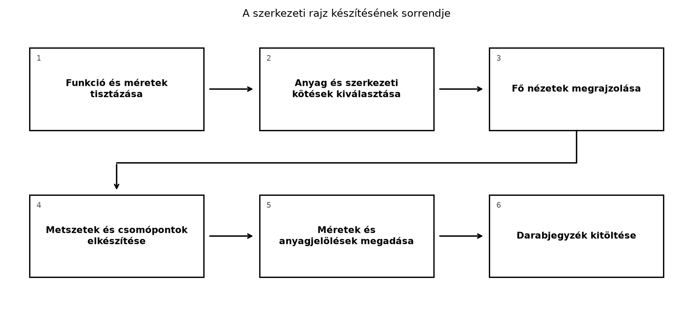

Egy megrendelő bejön a műhelybe, és azt mondja: „Szeretnék egy konyhai ülőkét, tömör bükkfából, nagyjából ilyen magasra.” Mutatja a kezével. Ez még nem gyártási utasítás. Ha az asztalos azonnal fűrészelni kezd, néhány óra múlva kiderülhet, hogy a láb hossza nem illik a kávákhoz, az ülőlap nem fekszik a keretre, vagy a csapozás helyén megreped a fa.
Ezért a bútor készítése előtt szerkezeti rajzot kell készíteni. A szerkezeti rajz megmutatja, milyen alkatrészekből áll a bútor, hogyan kapcsolódnak, milyen méretekkel és milyen anyagból készülnek. Ebben az alfejezetben négy egyszerű tömörfa bútort rajzolunk meg szöveges rajzleírással, és hozzájuk tartozó darabjegyzéket is készítünk: ékelt lábú kispadot, konyhai ülőkét, keretszerkezetű asztalt és kávaszerkezetű faliszekrényt.
A rajz és a darabjegyzék a rajz–anyag–művelet hármas első láncszeme: a rajzról készül a szabásjegyzék, a szabásjegyzékből pedig a műveletsor. Ezért ezt az alfejezetet a későbbiekben közvetlenül használjuk a A műszaki dokumentáció részei és a rajzkészlet és a Faipari alapszerkezetek: lap-, keret-, káva- és állványszerkezet alfejezetekben.
Definíció. A szerkezeti rajz (gyakran műhelyrajznak is nevezik) olyan faipari rajz, amely egy bútor vagy bútorrész alkatrészeit, azok pontos méreteit, anyagát, megmunkálási helyeit és az alkatrészek kapcsolódását ábrázolja.
A szerkezeti rajz tehát nemcsak a bútor külső formáját mutatja, hanem azt is, hogy mi történik az anyagban: hol van csaplyuk, nút, beeresztés, ék vagy csavarlyuk. Ezért a rajz általában több részből áll:
Definíció. A darabjegyzék a rajzhoz tartozó tételes lista. Minden tétel megadja a sorszámot, az alkatrész nevét, darabszámát, anyagát, kész méretét, szükség esetén a nyers méretet és a megjegyzést. A darabjegyzékből készül később a szabásjegyzék.
A faipari rajzon a tömörfa részeket a hagyományos faanyagjelekkel jelöljük. A metszetben a vágott fa rajzát hossz- vagy keresztirányú erezettel ábrázoljuk, attól függően, hogy a metszősík a fa rostjával párhuzamos vagy arra merőleges. A pontos vonalfajtákat, anyagjelöléseket és metszetjelöléseket a Rajzeszközök, rajzfajták, szabványos vonalak és betűk és Anyagjelölések és metszetsraffozás a faipari rajzon alfejezetek mutatják be. Itt a bútorszerkezeti rajz logikájára összpontosítunk.
Mielőtt rajzolni kezdesz, döntsd el:
A rajzkészítés során mindig a bázislap–bázisél elvét tartjuk szem előtt. Ez azt jelenti: az alkatrészeket úgy méretezd meg, hogy a megmunkálásnak legyen egy kiinduló, síkra gyalult lapja és éle. A rajz ezt a viszonyítási alapot adja meg a műhelyszámra.
A szerkezeti rajzot lépésről lépésre érdemes felépíteni. Az alábbi folyamatábra mutatja az ajánlott sorrendet:

Technológiai lapot most nem gyártáshoz, hanem rajzkészítéshez készítesz. A számozott lépések otthon, a rajzasztalnál is használhatók.
Cél: teljes szerkezeti rajz és darabjegyzék készítése egyszerű tömörfa bútorhoz.
Alapanyagok, eszközök, dokumentumok:
Számozott lépések ellenőrzési pontokkal:
A rajz hátterében mindig ott van a „a fa mozog” elv: a széles tömörfa alkatrész méretváltozását a szerkezeti rajzon is figyelembe kell venni, például asztallap-rögzítésnél vagy hátfal-beépítésnél.
Szerkezeti leírás. Az ékelt lábú kispad a legegyszerűbb ülőbútor: egy tömörfa ülőlap, négy láb, és a lábak csapjai felül ékkel rögzítve. A csap (itt 20 mm széles téglalap keresztmetszetű, a furat ennek megfelelő) az ülőlap átmenő lyukába illeszkedik, a tetején kialakított ékrésbe egy keményfa éket ütnek. Az ék szétfeszíti a csapot, ezért a láb nem tud kifordulni. Ez a szerkezet jól mutatja a csap és a furat kapcsolatát.
Rajzi ábrázolás:
Méretek (tanulási példa): ülőlap 700 mm × 240 mm × 30 mm; láb 410 mm × 40 mm × 30 mm; csaphossz 38 mm, ebből 8 mm az ülőlap fölött marad; csapszélesség 20 mm; ék 20 mm széles (a csap szélességével egyező), 30 mm hosszú, 5 mm vastag keményfa; az ékrés a csap bütüjében az ülőlap rostirányára merőleges, mélysége a csaphossz kb. 2/3-a (tájékoztató). A furat a csap méretéhez illeszkedik; az ék nem lehet szélesebb a csapnál.
Az A–A metszetben az ülőlap hosszirányú, a láb és a csap függőleges erezetet kap; az ék a kiálló csap tetején, az ülőlap rostirányára merőleges ékrésben ül, így nem hasítja a lapot.
Szerkezeti leírás. A konyhai ülőke alacsony, zárt keretszerkezetű bútor. A négy láb közé felső kávák és alsó merevítőlécek kapcsolódnak. Az ülőlap a felső kávákra fekszik, mozgásbiztosan rögzítve. A kávák a lábakba vésett csapozással vagy hosszú csaplyukba beeresztve kötnek. Ez a szerkezet merev, és akkor sem lazul ki, ha a bútort gyakran arrébb húzzák.
Rajzi ábrázolás:
Méretek (tanulási példa): ülőlap 360 mm × 260 mm × 25 mm; láb 380 mm × 35 mm × 35 mm; felső kávák elöl és hátul 326 mm × 60 mm × 18 mm (a lábak közötti 360 − 2 · 35 = 290 mm + 2 · 18 mm csap); oldalsó kávák 226 mm × 60 mm × 18 mm (260 − 70 + 36 = 226 mm); alsó merevítő léc 326 mm, ill. 226 mm × 30 mm × 18 mm; csap 6 mm vastag (≈ 18/3), 18 mm hosszú, csaplyukmélység 20 mm (2 mm fenékhézag); befoglaló magasság 380 + 25 = 405 mm.
Szerkezeti leírás. A keretszerkezetű asztal jellemző részei: az asztallap, a keret (kávák) és a lábak. A lábakat a vízszintes kávák kötik össze, a sarkokon vésett csapozással vagy más keretkötéssel. A tömörfa asztallapot mozgásbiztosan kell rögzíteni, mert a lap keresztirányú méretváltozása a kávánál nagyobb lehet. A rögzítés módja lehet:
Rajzi ábrázolás:
Méretek (tanulási példa): asztallap 1000 mm × 600 mm × 22 mm; hosszkáva 820 mm × 80 mm × 25 mm; keresztkáva 420 mm × 80 mm × 25 mm; láb 730 mm × 60 mm × 60 mm.
A HTML-változatban a fanedvesség (8–14 %) csúszkájával látható, hogy a 600 mm széles lap kb. ±5 mm-t mozog (tájékoztató: 0,3 % / 1 % nedvességváltozás), és a rögzítőelemek ezt a mozgást engedik, a merev csavarozás viszont nem.
Miért mozgásbiztos? Ha az asztallapot mereven, körben csavaroznánk, a fa dagadáskor nem tudna tágulni, ezért repedhet vagy a káva húzhatná el. A hosszúkás furat megadja a mozgási utat, a csavar feje pedig lefelé tartja a lapot.
Szerkezeti leírás. A kávaszerkezetű faliszekrény két oldalfalból, tetőből, fenékből, egy vagy több polcból, hátfalból és felfüggesztő elemekből áll. Az oldallapok és a vízszintes elemek nútba beeresztve kapcsolódnak, vagy csapozással. A hátfalat a hátsó éltől beljebb mart nútba csúsztatják (rétegelt lemez hátfal ragasztás nélkül), vagy kívülről csavarozzák. Tömörfa hátfal csak hornyolt-eresztékes, ragasztatlan lécekből, mozgási hézaggal készülhet, mert a nútba ragasztott tömörfa hátfal a „fa mozog” elv szerint nem merevít, hanem repedést okoz. A fali rögzítést felső merevítőléccel vagy fém felfüggesztő lemezzel oldják meg.
Rajzi ábrázolás:
Méretek (tanulási példa): szekrény külső szélessége 400 mm, magassága 600 mm, mélysége 250 mm; oldalfal 600 mm × 250 mm × 20 mm; tető, fenék és polc 376 mm × 228 mm × 20 mm (a 360 mm-es belső szélesség + 2 · 8 mm nútmélység; a 228 mm = 250 − 12 − 10: a hátfalnút előtt megállnak); hátfal 376 mm × 560 mm × 10 mm rétegelt lemez; nútok 10 mm szélesek, 8 mm mélyek (tájékoztató).
Felfüggesztés a rajzon: a felső rész mögé kerül egy felfüggesztő léc, amely a falra szerelt akasztólécbe vagy két fém fogadóelembe akad. A rajzon a szerelvény furathelyeit, a csavarok helyét és a falhoz rögzítő tiplik távolságát is meg kell adni.
A metszetben a tető, a fenék és a polc bütümetszetként, a hátfal és a mögöttük látszó oldalfal hosszirányú erezettel jelenik meg. A rajzon a polc a hátfal előtt megáll (228 mm mély), és a csavarok számára egy 60 × 20 mm-es felső merevítőléc szerepel: ez a rajzi összhanghoz választott megoldás, a darabjegyzékben ellenőrizd.
Most készítsük el a konyhai ülőke teljes rajzát és darabjegyzékét. A rajz négy részből áll:
Darabjegyzék:
| Tétel | Megnevezés | Db | Anyag | Kész méret h × sz × v (mm) | Megjegyzés |
|---|---|---|---|---|---|
| 1 | Ülőlap | 1 | bükk | 360 × 260 × 25 | él enyhén lekerekítve |
| 2 | Láb | 4 | bükk | 380 × 35 × 35 | csap nélkül |
| 3 | Felső káva, elöl/hátul | 2 | bükk | 326 × 60 × 18 | vésett csap a lábakba |
| 4 | Felső káva, oldalt | 2 | bükk | 226 × 60 × 18 | vésett csap a lábakba |
| 5 | Merevítő léc, elöl/hátul | 2 | bükk | 326 × 30 × 18 | csap vagy lamelló |
| 6 | Merevítő léc, oldalt | 2 | bükk | 226 × 30 × 18 | csap vagy lamelló |
| 7 | Lapgomb | 4 | bükk | 40 × 25 × 20 | nyelve a káva hornyában, csavarral a laphoz, nem ragasztva (méretek tájékoztatók, ellenőrizendő: szakkönyv) |
A darabjegyzék ellenőrzése. A lábak száma 4, a felső kávák számát jól adtuk meg: elöl 1, hátul 1, oldalt 2. Az ülőlap rögzítéséhez 4 lapgomb elég (elöl és hátul kávánként 2 db); a gombok nem ragasztottak, így a lap a horonyban mozoghat. A rajz tételszámai és a táblázat egyeznek.
A rajz méretmérlege: káva + 2 · láb − 2 · csap = befoglaló méret, elöl mm, oldalt mm. A HTML-változatban a tételszámra mutatva a darabjegyzék sora kiemelődik, és robbantott nézet is választható.
Szabvány. A faipari szerkezeti rajzokon az európai E vetítési rendet és az MSZ EN ISO 128, MSZ EN ISO 129 előírásait követjük a vonalakra és méretmegadásra. A metszetek és anyagjelölések a faipari szakrajzi gyakorlat szerint alakulnak. A pontos szabványszámok és azok legújabb kiadásai a rajz elkészítése előtt ellenőrizendők. A méreteket mm-ben adjuk meg; a rajzon a mm mértékegységet nem írjuk ki.
Továbbvitt eredmény. A bútor szerkezeti rajza és darabjegyzéke a A műszaki dokumentáció részei és a rajzkészlet alfejezetben teljes rajzkészletté válik, a Faipari alapszerkezetek: lap-, keret-, káva- és állványszerkezet alfejezetben pedig ugyanezeket a szerkezeteket készítjük el a műhelyben.
A szerkezeti rajzot az alábbi szempontok szerint ellenőrizzük:
Eltérés esetén a rajzot vissza kell javítani, mielőtt abból szabásjegyzék készül.
Egy asztalos tanuló a konyhai ülőke rajzát készítette, de a darabjegyzékben a láb hosszát 380 mm helyett 350 mm-nek írta. A rajzon a 380 mm-es láb szerepelt, a táblázatban azonban elírta. A műhely a darabjegyzékből vágta le a lábakat, és a bútor alacsony lett. A mester a bútor összeállítása előtt a rajzot és a darabjegyzéket egymás mellé tette, és azonnal látta a hibát. A tanulság: egyetlen elírás is megelőzhető azzal, hogy a szerkezeti rajzot és a darabjegyzéket együtt ellenőrizzük, mielőtt szabásjegyzéket készítünk.
1. feladat (A). Sorold fel a szerkezeti rajz legalább öt részét, és egy mondatban jellemezd mindegyiket.
2. feladat (A). Írd le, mi a darabjegyzék feladata a rajz mellett.
3. feladat (B). A kispad darabjegyzékében ez áll: 4 db láb 410 × 40 × 30 mm, 4 db ék. A rajzon az ülőlapban 4 átmenő furat látszik. Melyik tétel hiányzik, és milyen adatokkal kell felvenni?
4. feladat (B). Rajzleírás alapján készítsd el a faliszekrény oldallapjának méretvázlatát. Az oldallap 600 mm magas, 250 mm mély, 20 mm vastag. A hátfalnút a hátsó széltől 20 mm-re, 10 mm széles és 8 mm mély. A polcnút az oldal alsó élétől 300 mm-re (a nút alsó éléig) fut, 20 mm széles és 8 mm mély, a hátfalnúttól az elülső él előtt 15 mm-rel megáll. Add meg a nútok helyét és a külső méreteket.
5. feladat (C). Tervezz asztallap-rögzítést tömör fa asztallaphoz, ha a lap 1000×600×22 mm. Milyen szerkezeti rajzrészleteket kell ábrázolnod, és miért?
6. feladat (D). Válassz egy egyszerű tömörfa bútort, például kis éjjeliszekrényt. Készítsd el a szerkezeti rajz vázlatát: add meg a nézeteket, metszősíkot, méreteket és darabjegyzéket. Ellenőrizd a rajzot a fenti ellenőrzőlista alapján.
Önellenőrzés – válaszok
1. feladat. A szerkezeti rajz részei: nézetrajz (külső forma), metszeti rajz (belső szerkezet), csomóponti rajz (kapcsolatok nagyobb léptékben), méretmegadás (pontos méretek), anyagjelölés (fafaj, anyag), darabjegyzék (tételes lista).
2. feladat. A darabjegyzék a rajzhoz tartozó tételes lista. Minden alkatrészt megnevez, megadja a darabszámot, az anyagot, a kész méretet és a megjegyzést, így a rajz alapján szabásjegyzék készíthető.
3. feladat. Hiányzik az ülőlap tétel. Az ülőlap 700×240×30 mm-es, 1 db bükk, megjegyzés: 4 db átmenő lábfurat 20 × 30 mm (a csap keresztmetszetéhez illeszkedő téglalap).
4. feladat. Az oldallap téglalap: 600 mm magas, 250 mm mély, 20 mm vastag. A hátfalnút a hátsó széltől 20 mm-re, 10 mm széles, 8 mm mély. A polcnút az oldal alsó élétől 300 mm-re (a nút alsó éléig) fut, vízszintesen, 20 mm széles, 8 mm mély, a hátfalnúttól az elülső él előtt 15 mm-rel megáll. A nútokat a lap belső oldalának rajzán kell jelölni, a méreteket a nútközépvonalig vagy a nút széléig megadni.
5. feladat. Az asztallap-rögzítéshez csomóponti rajzot kell készíteni, mert a rögzítőelem és a furat kis méretű. A rajzon szerepel: a káva metszete, az asztallap alsó felülete, hosszúkás furat a káván, csavar, alátét. Azért hosszúkás furat, hogy a lap szélességi mozgását a rögzítés ne akadályozza.
6. feladat. A megoldás egyéni. A rajznak tartalmaznia kell a nézetek, metszetek, méretek, anyagjelölések és darabjegyzék logikáját. A tanulónak ellenőriznie kell a teljességet, a méretek egyezését, a kötések értelmezhetőségét és a darabjegyzék hivatkozásait.
A bútor szerkezeti rajza a gyártás alapja. Nemcsak a külső formát, hanem az alkatrészeket, a méreteket, az anyagokat és a kapcsolódásokat is megmutatja. A rajz nézetekből, metszetekből, csomópontokból, méretmegadásból, anyagjelölésből és darabjegyzékből áll. A négy példa – ékelt lábú kispad, konyhai ülőke, keretszerkezetű asztal, kávaszerkezetű faliszekrény – ugyanazt a gondolkodást gyakoroltatja: előbb a funkció, majd a szerkezet, a méretek és a kapcsolatok. A szerkezeti rajzot mindig ellenőrizni kell: legyen teljes, mérethelyes, egyértelmű, és a darabjegyzék tételei egyezzenek a rajzzal. A tömörfa bútoroknál a fa mozgását is figyelembe kell venni, például az asztallapot mozgásbiztosan kell rögzíteni. Továbbvitt eredmény. A bútor szerkezeti rajza és darabjegyzéke a A műszaki dokumentáció részei és a rajzkészlet alfejezet rajzkészletének alapját adja, és a Faipari alapszerkezetek: lap-, keret-, káva- és állványszerkezet alfejezetben ugyanezeket a szerkezeteket készítjük el a műhelyben.
A faipari szakrajz alapjai az MSZ EN ISO 128, MSZ EN ISO 129 és a faipari anyagjelölési gyakorlat szerint használhatók; a pontos szabványszámok és legfrissebb kiadások ellenőrizendők. A megadott méretek tanulási példák, nem helyettesítik az adott termék tervezési szabványát. A fém asztallap-rögzítő és a falfelfüggesztő szerelvény teherbírása a gyártói adatlapon ellenőrizendő. A fa rostirányú és nedvességváltozásból adódó mozgása faanyag-fizikai tájékoztató érték, a pontos adatokat a kiválasztott fafaj szakkönyvi táblázata adja meg (ellenőrizendő forrás).